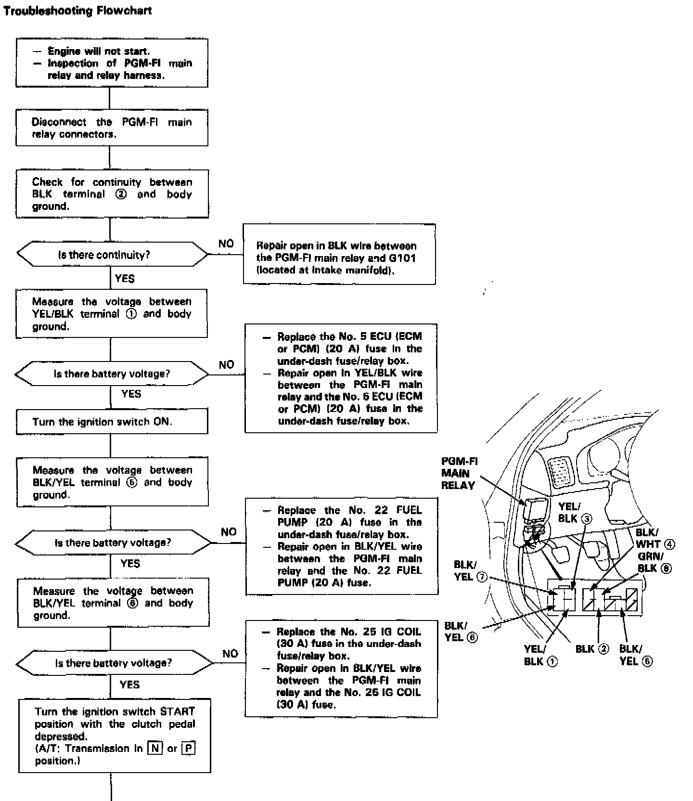
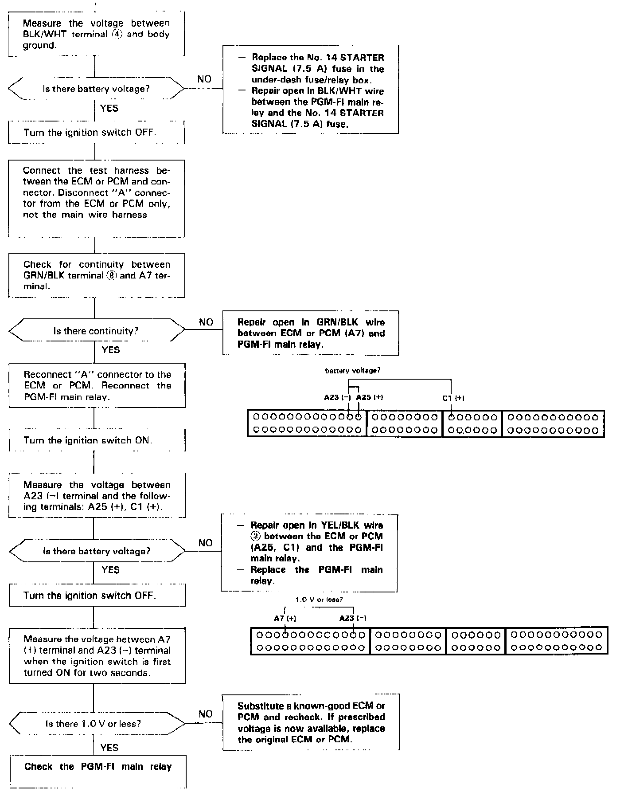

Operation CHARM
: Car repair manuals for everyone.
Home
>>
Acura
>>
1994
>>
Legend Sedan V6-3206cc 3.2L SOHC FI
>>
Repair and Diagnosis
>>
Powertrain Management
>>
Fuel Delivery and Air Induction
>>
Main Relay (Computer/Fuel System)
>>
Testing and Inspection
>>
PGM-FI Main Relay Troubleshooting Flowchart
PGM-FI Main Relay Troubleshooting Flowchart
PGM-FI MAIN RELAY

PART 1 OF 2

PART 2 OF 2